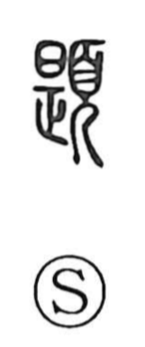

題

Uncategorized
Kun: hitai, shirusu | On: dai, tei
title ・ inscription ・ to write down
Explanation
題 is a phono-semantic character built from 是 as the sound element and 頁 as the meaning element. 頁 depicts a person bowing in reverence with ritual headgear and functions as the ‘head/face’ indicator. 是, originally the form of a spoon or ladle, when applied to the human face was associated with the upper part—the forehead. The Shuowen explicitly glosses it as ‘forehead,’ and in early usage it could mean the brow or the head more generally. From the idea of the forehead as the central front of the face, the sense extended to plaques hung at the front center of a room (題額), and by further development to inscribing or writing a title—hence the modern meanings of ‘title’ and ‘to write down.’